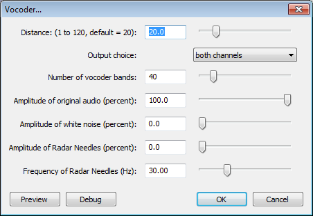

Vocoder
From Audacity Manual
The Audacity Vocoder effect simulates a classical analog multiband vocoder, as described in the "History" section of the Wikipedia Vocoder page.
- Accessed by:
- 
| Vocoder only works on unsplit stereo tracks. |
Distance
Defines the distance between the center frequency of the vocoder band to the cutoff frequency of the respective envelope low pass filter. With the default distance of 20.0 the envelope signals ( generated from the modulator bandpass filters) are twenty times slower than the center frequency of the bandpass filters of the respective vocoder band. The distance controls the "responsivness" of the Vocoder to changes in the modulator signal. The higher the distance, the slower the response. The smaller the distance, the more of the original modulator signal can be heard in the output signal.
Output choice
- Both channels: The modulated vocoder output signal is duplicated into both stereo channels. This is most convenient when fine-adjusting the vocoder output using headphones.
- Right only: The modulated vocoder output signal appears only in the right channel, while the left channel still contains the unmodified modulator signal. This is useful when applying a mono modulator to a stereo carrier, since the modulator can be reused when processing the right channel of the carrier.
Number of vocoder bands
Defines the frequency resolution of the Vocoder. This behaves similarly to a multiband equalizer. The more bands, the finer the different frequencies that can be manipulated and modulated. The default setting is 40. Increasing the number of Vocoder bands slows down the processing time.
Amplitude of original audio (percent)
Defines how much of the original audio signal shall be contained in the carrier signal; the default setting is 100%.
Amplitude of white noise (percent)
The amount of white noise that is added to the right channel before applying the vocoder; the default setting is 0%.
Amplitude of Radar Needles (percent)
The amplitude of "radar needles" that are added to the right channel before applying the vocoder. The default setting is 0%.
Frequency of Radar Needles (Hz)
The number of "radar needles" per second where only one sample per period has a non-zero value. This is the most-broadband signal possible, even more broadband than white noise. The default setting is 30.0 Hz. See also Wikipedia Dirac Comb for a detailed description.
Best results may be obtained if you first mix the radar needles with another sound, then apply Vocoder.
Usage examples with stereo and mono modulators and carriers
If you have a carrier signal with a very limited spectrum and most of the voice gets lost after processing because the spectra are too different you have two choices:
- Add some white noise - the result will sound like an old tape recorder
- Add some low-frequency radar needles - this will sound like a tremolo.
This section uses the terms "modulator" and "carrier". In a vocoder, the modulator is the signal that modulates or controls the carrier signal. In audio context, the modulator is the sound you want to change (often a voice talking or singing), and the carrier you use to change that sound is often a steady musical tone or note, or sometimes a natural sound like some kind of noise.
So for the purposes of the steps in all the following examples, we assume the modulator to be a "voice" track and the carrier to be a "music" track.
The modulator and carrier will thus usually be two separate audio tracks. Self-made voice or speech recordings are usually mono, but voice or speech recordings from radio or CD often contain stereo reverb effects. Music signals can be either mono or stereo. There are thus four different practical cases:
- Case 1: Applying a mono modulator to a mono carrier - the simplest case
- Case 2: Applying a mono modulator to a stereo carrier - the most common case
- Case 3: Applying a stereo modulator to a mono carrier
- Case 4: Applying a stereo modulator to a stereo carrier
To apply the Vocoder effect, Audacity needs to combine the modulator and carrier signals into a stereo audio track where the modulator is in the left channel (the upper waveform of the stereo track) and the carrier is in the right channel (the lower waveform). The remainder of this section thus describes the steps needed to combine the signals in the four cases above.
Case 1: Applying a mono modulator to a mono carrier
This means that the modulator (voice) and carrier (music) initially are two separate Audacity mono audio tracks.
- If necessary, move the voice track directly above the music track.
- In the upper track (voice), open the Audio Track Dropdown Menu and choose "Make Stereo Track".
- Select the stereo track and apply Vocoder with "output choice" set to "both channels". You now have a "dual mono" track where the same content is in left and right channels of the stereo track.
- Select the stereo track and choose to make a mono track again.
Case 2: Applying a mono modulator to a stereo carrier
This means that the modulator (voice) is a mono audio track and carrier (music) is a stereo audio track. This is a very common case because voice recordings are usually mono while music recordings are most often stereo.
- Open the Audio Track Dropdown Menu of the stereo music track and choose "Split Stereo Track". We now have a "Left" music track above a "Right" music track.
- If necessary, move the voice track directly above the left music track.
- In the voice track, open the Track Dropdown Menu and choose "Make Stereo Track".
- Select only the upper stereo track and apply the Vocoder with "Output choice" set to "right only". This processes the "Left" channel of the original music track, and lets us retain the mono voice track for reuse in step 8.
- In the upper stereo track, open the Track Dropdown Menu and choose "Split Stereo Track"
- Move the first track down one track so that it is above the right music track
- Open the Track Dropdown Menu in the second track and choose "Make Stereo Track".
- Select only the resulting stereo track and apply Vocoder with "output choice" set to "both channels". This now processes the "Right" channel of the original music track.
- Select the stereo track, and choose .
- In the upper mono track, open the Track Dropdown Menu and choose "Make Stereo Track". Now we have the two processed music channels combined into a stereo track.
Case 3: Applying a stereo modulator to a mono carrier
This means that the modulator (voice) is a stereo track and carrier (music) is a mono audio track.
- If necessary, move the stereo voice track above the mono music track.
- Select the (upper) stereo voice track, open the Audio Track Dropdown Menu and choose "Split Stereo Track".
- Select the mono (third) music track, and choose .
- Move the first music track (the third track on screen) up one track so that you now from top to bottom of the screen:
- "Left" voice track
- The original mono music track
- "Right" voice track
- The duplicated mono music track.
- Select the "Left" voice track, open the Track Dropdown Menu and choose "Make Stereo Track".
- Select only the track you just made into stereo (the upper stereo track) and apply the Vocoder with "Output choice" set to "both channels".
- Select only the stereo track you just processed, and choose .
- Select the "Right" voice track, open the Track Dropdown Menu and choose "Make Stereo Track".
- Select only the track you just made into stereo (the lower stereo track) and apply the Vocoder with "Output choice" set to "both channels".
- Select only the stereo track you just processed, and choose .
- Open the Track Dropdown Menu in the upper track and choose "Make Stereo Track". Now we have a stereo track, containing processed left and right channels of the original stereo voice and mono music track.
Case 4: Applying a stereo modulator to a stereo carrier
This means that the modulator (voice) and the carrier (music) are both stereo audio tracks.
- If necessary, move the stereo voice track above the stereo music track.
- Select the (upper) stereo voice track, open the Audio Track Dropdown Menu and choose "Split Stereo Track".
- Select the (lower) stereo music track, open the Track Dropdown Menu and choose "Split Stereo Track".
- Move the "Left" music track up one track so that you now have two "Left" tracks above two "Right" tracks.
- Select the "Left" of the voice track (the uppermost track), open the Track Dropdown Menu and choose "Make Stereo Track".
- Select only the track you just made into stereo (the upper stereo track) and apply the Vocoder with "Output choice" set to "both channels".
- Select the "Right" of the voice track (the third track), open the Track Dropdown Menu and choose "Make Stereo Track".
- Select only the track you just made into stereo (the lower stereo track) and apply the Vocoder with "Output choice" set to "both channels".
- Select both stereo tracks. You can do this by holding SHIFT on the keyboard while clicking in the upper (unselected) stereo track, or hold SHIFT while pressing UP arrow on the keyboard. With both tracks selected, choose .
- Open the Track Dropdown Menu in the upper track and choose "Make Stereo Track". Now we have a stereo track, containing processed left and right channels of the original stereo voice and stereo music track.